Jak to wszystko się łączy
Która część Atalai rozmawia z którą, jakim łączem i co nim przesyła. Pod każdym diagramem: co płynie, a co nie.
Atalaia jest w fazie pre-alfa. Na prawdziwych płytkach, na stole warsztatowym, działały: uruchamianie, radio, przyciski i klawiatura, przypisywanie, aktualizacja przez radio oraz całe gry z kontrolerem terenu. Aplikacja na iOS przeszła swoją listę kontrolną na iPhonie. Reszta jest zbudowana i przetestowana tylko w oprogramowaniu.
Jak czytać pierwszy diagram: linia ciągła działa bez internetu na terenie gry, linia przerywana wymaga internetu.
1 · Cały system

Co płynie
Ruch gry zostaje na terenie. Skrzynki i kontroler rozmawiają przez LoRa za pośrednictwem modemu USB. Konsola GM, aplikacja dla graczy, propy na Androidzie i pliki pobierane przez skrzynkę korzystają z własnego Wi-Fi terenu.
Co nie płynie
- Nic w grze nie czeka na internet. Serwer strony jest opcjonalny.
- Pozycje graczy nigdy nie idą przez LoRa ani MQTT.
- Serwer strony nigdy nie łączy się z kontrolerem: to kontroler zawsze otwiera połączenie.
- Skrzynki nigdy nie rozmawiają z internetem. Tryby pobiera kontroler, a firmware wgrywa człowiek.
2 · Warstwy radia

Co płynie
Każdy pakiet jest szyfrowany i sprawdzany za pomocą AES-128-CCM kluczem gry. Modem zamyka i otwiera pakiety, więc kontroler i modem wymieniają po kablu jawne ramki. Skrzynki powtarzają nawzajem swoje pakiety.
Co nie płynie
- Przez LoRa nie idą pozycje, nazwy, tokeny, hasła Wi-Fi, obrazy firmware'u ani pakiety trybów.
- Duże pliki są pobierane przez HTTPS. Tylko krótka oferta lub raport o błędzie używa LoRa.
3 · Gra od zaproszenia do końca


Co płynie
Wolna skrzynka ogłasza się, a GM ją zaprasza. Dane dołączenia (id i klucz gry, rola, drużyny, kanał) przychodzą zaszyfrowane. Gra startuje dopiero, gdy każda rola ma skrzynkę. Potem skrzynki wysyłają zdarzenia oraz STATE co 15 s.
Co nie płynie
- Konsola GM nigdy nie mówi przez LoRa: rozmawia tylko z kontrolerem.
- Klucz gry podróżuje tylko w zaszyfrowanym zaproszeniu (lub na karcie), nigdy w ogłoszeniu.
4 · Gracze w dniu gry


Co płynie
Gracz skanuje plakat, przypina CA terenu, robi check-in i dostaje token. Potem aplikacja śledzi strumień na żywo. Sędzia podpisuje pomiary chrono na własnym telefonie.
Co nie płynie
- Pozycje nigdy nie idą przez LoRa ani MQTT i nigdy nie trafiają do graczy o innych rolach.
- Internet nie jest potrzebny: wszystko to działa przy wyłączonym serwerze strony.
5 · Kontroler i serwer strony


Co płynie
Kontroler wysyła gry, zdarzenia, wyniki, węzły i zapisy chrono co 30 s w trakcie gry i co 5 min między grami. Pobiera harmonogramy, listy uczestników i ustawienia. Strumień przenosi widok na żywo i polecenia zdalnego GM, które kontroler sprawdza ponownie.
Co nie płynie
- Serwer strony nigdy nie łączy się z kontrolerem i nigdy nie przechowuje klucza gry, klucza dołączenia ani tokenów.
- Praca offline jest normalna: zdarzenia czekają i są wysyłane później, po kolei.
- Pozycje opuszczają kontroler tylko w dwóch przypadkach wymagających zgody (zdalny GM, zdalny przekaźnik ATAK), w pamięci.
6 · Jak coś trafia na skrzynkę

Co płynie
Klucze wydań i klucze trybów podpisują pliki, a ich publiczne połowy są wbudowane w skrzynkę. Człowiek pobiera podpisany firmware i wgrywa go do kontrolera. Kontroler oferuje aktualizację przez LoRa, a skrzynka pobiera ją przez Wi-Fi terenu. Skrzynkę przypisuje się kablem USB, kartą NFC lub kodem parowania.
Co nie płynie
- Plik czyni bezpiecznym podpis, nie kanał: skrzynka decyduje kluczami z własnego firmware'u, zanim zapisze choćby bajt.
- Kontroler nigdy nie pobiera firmware'u z GitHuba.
- Klucze wydań i klucze trybów to osobne klucze.
7 · Logowanie i konta na serwerze strony

Co płynie
Krótkotrwały token dostępu plus token odświeżania wymieniany przy każdym użyciu. Role obsługi liczą się tylko w sesji z drugim składnikiem (TOTP lub passkey). Samo logowanie przez serwis społecznościowy nie jest drugim składnikiem.
Co nie płynie
- Kontroler nie używa tych kont: używa klucza API terenu.
- Z dostawcą logowania społecznościowego łączy się tylko przeglądarka danej osoby i serwer strony, nigdy kontroler, skrzynka ani modem.